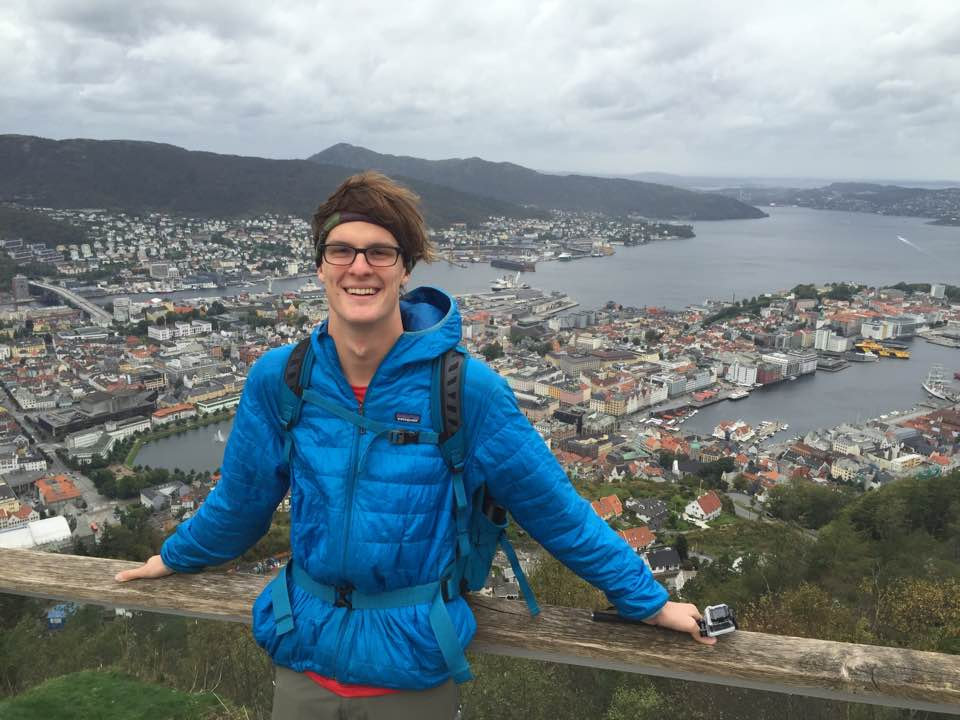
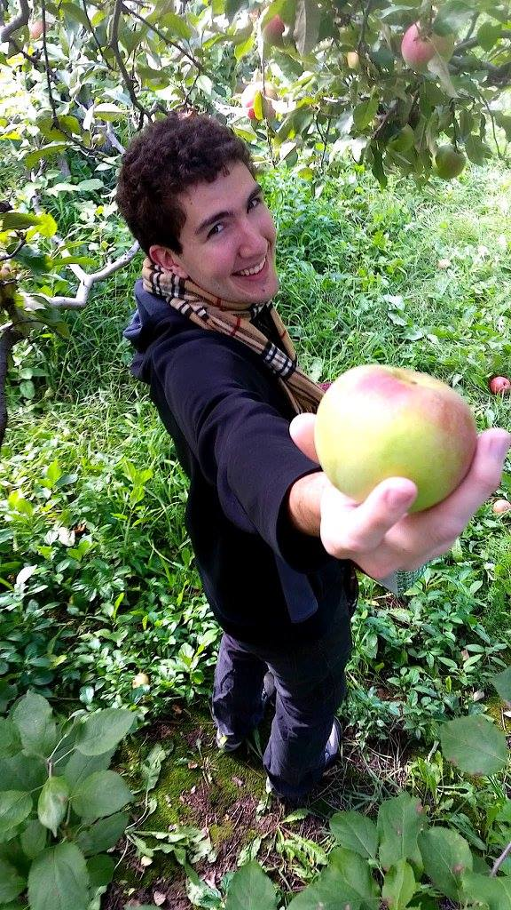
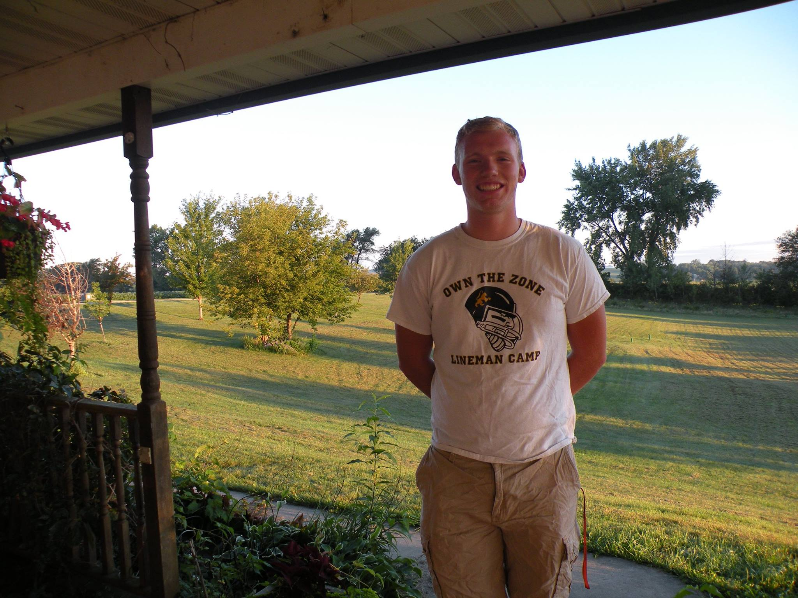
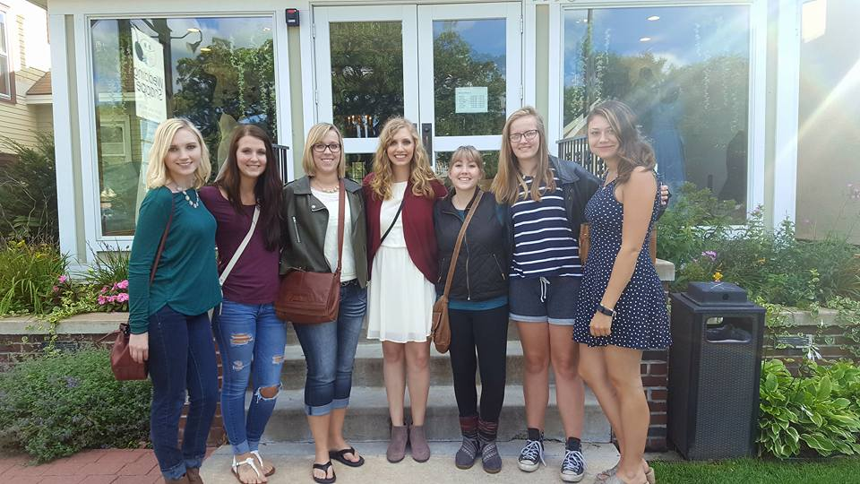
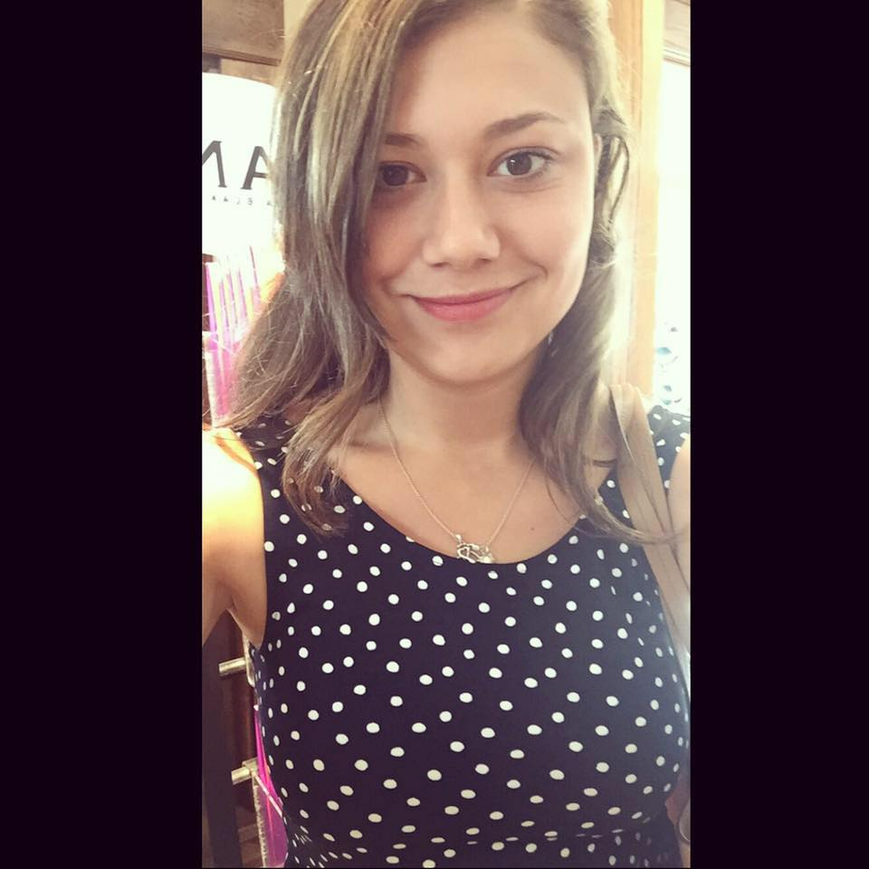
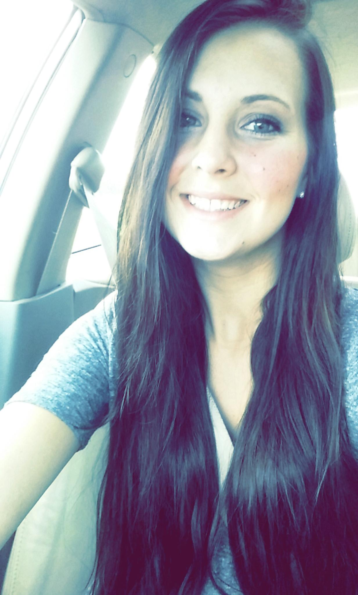
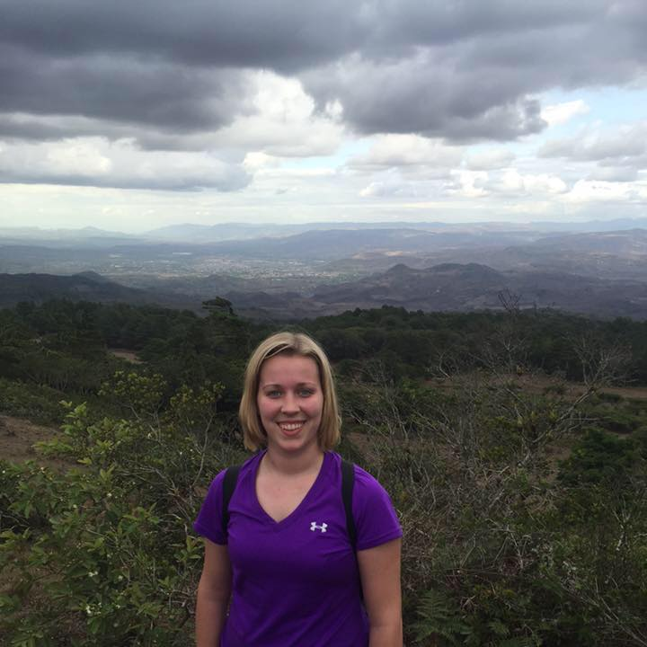
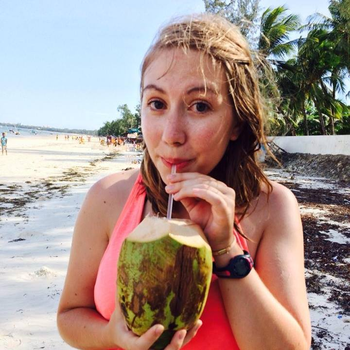
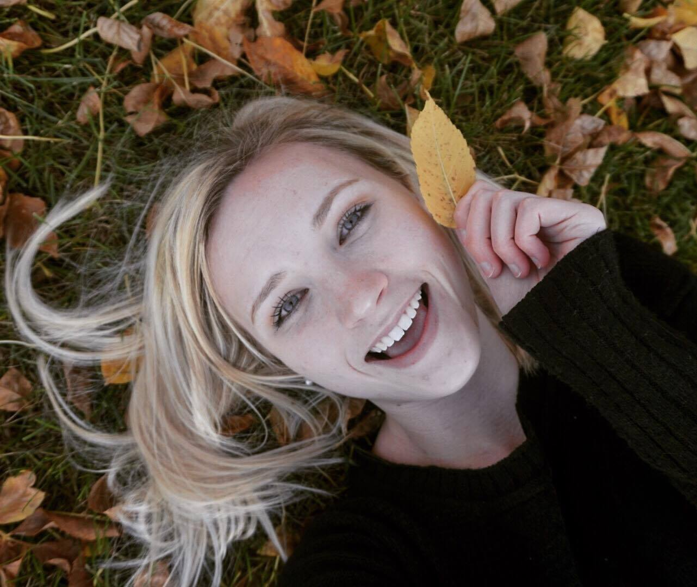
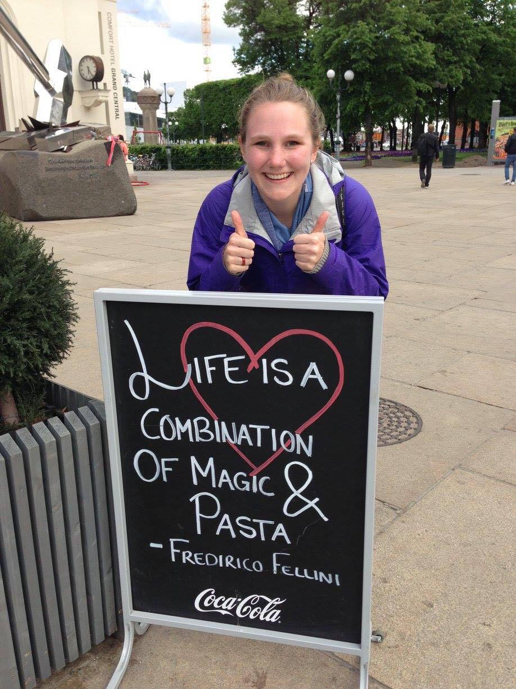

Phillip’s Crew:
Best Man: Branch Johnson
 Hello wonderful people and greetings wedding guests, my name is Branch Johnson. I am honored and excited to participate in Phillip and Cassie’s wedding. Phil and I go back to the St. Louis Park swim team where we made friendships and memories that will last a lifetime. I’m sure you’ll hear more about that later… I met Cassie at Phillip’s graduation party after desperately urging Phil to go on their first date! About myself, I study at Luther College in Decorah Iowa where I found the wonderful study of Norwegian language and culture. I also swam on their team for two years. Now, I am involved with the Luther choirs, classical voice, and guitar program. It is hard to put into words how excited I am to celebrate Phillip and Cassie’s marriage. To me, they have been an example to live by and people I admire. I am honored to be Phillips best man and witness the launch of their lives together.
Groomsman: Alex Kersten
 Phillip and I go way back. I’ve known him for over two decades and watched him turn into “a good man, Charlie Brown” (as our dad would say!). Although it may be hard to tell us apart at first, it’s easy to identify Phillip by his wit and passion for deep conversation; there’s scarcely a moment that he is not thinking critically or applying his vast array of knowledge. He’s certainly come a long way since the days of wanting to be an artist living in Paris, making money by selling still-lifes of baguettes. I’m immensely proud that he met Cassie, as it was clear from day one that she also shared the same fervor for intelligent discourse – they’re a perfect match. It’s been wonderful to get to know Cassie and I know that she will be (and already has has been) an amazing part of the family. How incredible that you found each other – enjoying the same interests in medicine and helping the world. I wish you both the best and look forward to many years of sharing your happiness (and Phillip’s health advice)! Here’s to success in all aspects of your new life together.
Groomsman: Alex Bongers

Hello, I am Alexander Bongers and I’m the brides little brother. I’m 17 years old and have known Phillip for 4 years and Cassie my entire life, obviously. I have watched Phillip and Cassie grow together and love them both. Their weird antics and nerdy jokes make my day when I see them. I love the way Cassie has turned more and more like her mother.(she always wants hugs) She is the best sister I could ask for and want nothing but the best for her . I am sincere when I say that Phillip has passed my test. I look forward to finally having a brother and wish both Cassie and Phillip a lasting and fruitful marriage.
Cassie’s Crew:

Maid of honor: Rachel Stark
Hi Everyone!  I’m Rachel and I’ve known Cassie since we were 8 years old! We met in the third grade when Cassie moved to my school district and we became friends immediately. Over the years, we became best friends and I’m proud to have been asked to be her maid of honor! We have been fortunate enough to have gone on many adventures together over the years and I’m super excited to be a part of her and Phillip’s new adventure!
I’m Rachel and I’ve known Cassie since we were 8 years old! We met in the third grade when Cassie moved to my school district and we became friends immediately. Over the years, we became best friends and I’m proud to have been asked to be her maid of honor! We have been fortunate enough to have gone on many adventures together over the years and I’m super excited to be a part of her and Phillip’s new adventure!
Bridesmaid: Alyssa Tschida

Hi everyone! My name is Alyssa Tschida and I have been friends with Cassie since middle school! We used to hang out almost every day doing fun, silly things! (like dressing up in costumes and staying up late drinking Monster) Cassie and I were basically like best friends and when she moved to Rochester for Post-Secondary school, we tried to hangout every now and then but we eventually lost touch! In the last year, we have reconnected and I couldn’t be more happy and excited that she still decided to ask me to be a part of her big special day!!! Cassie, I cannot wait to see you marry the man of your dreams, You truly deserve it!
Bridesmaid: Abby Bongers

Hello everyone, My name is Abby I’m the youngest cousin to Cassie. I may be her cousin but I’ve always felt like a sister. I’d come over and she’d do my makeup, talk, and sometimes play dress up. So a couple years pass and I start hearing about a guy named Phillip, and I’m like wait who’s this guy, eventually I got to meet him, but he also got to meet “The Bongers Clan”, and it was weird at first because here’s all of us big and loud and Phillip is sort of quiet. So then the interrogation starts we found out he was pretty chill, and then the rest is history. I’m so very happy these two met and fell in love, they complete each other in ways that can only be observed. I hope these two continue to make each other happy and work through things together as a team.
Bridesmaid: Allison Lund

Hello everyone! My name is Allison Lund and I am one of Cassie’s bridesmaids. I first met Cassie during our freshmen year of college at UMR. After a few days of sitting at at our own table in organic chemistry, Cassie and I quickly became friends. From late night conversations to random adventures, our friendship has continued to grow. I also met Phillip at UMR during my sophomore year. As Cassie mentioned in her post, I was there when she was searching the UMR incoming freshmen page and came across Phillip and decided to message him :)! I can’t wait to be a part of their wedding!
Bridesmaid: Brenna Rauner

Hello! I’m Brenna and I became friends with Cassie in college. I became best friends with both Cassie and Phillip when we were all roomies last year and got to see first hand how amazing of a couple they are! I am excited to see where this next step in life takes them!
Bridesmaid: Stephanie Coats
Hey everyone!! My name is Steph and I am a friend of both Cassie and Phillips’! I actually met Cassie before college on Facebook! We started messaging and then she was kind enough to hang out with me on the first night of college. We have had many great memories including: walking 30 minutes to Caribou Coffee, visiting Thursdays on First and going to Target at 9:30 at night. I am grateful to have her as a friend! Through her and the STLF trip I also have gotten to know Phillip fairly well. I am so happy to know them both and am very excited to be apart of their special day!
Personal Attendant: Paige Arneson
Hello Wedding guests! I’m Paige and I am a friend/roommate of the bride and groom. I first met Cassie and Phillip in the summer of 2015 while working at Mayo, where I am now a graduate Student. After watching me finagle my way through 3 weddings in 2016 as a bridesmaid, Cassie asked if I would my expertise to the table as her personal attendant; I couldn’t be more excited! Besides attending weddings and being a grad student my life includes eating pasta, being a nerd (even while not in school) and going in adventures with my sister and boyfriend. I have to say I knew from the start Cassie and Phillip had a relationship that would stand the test of time and I can’t wait to celebrate the next chapter of their lives!